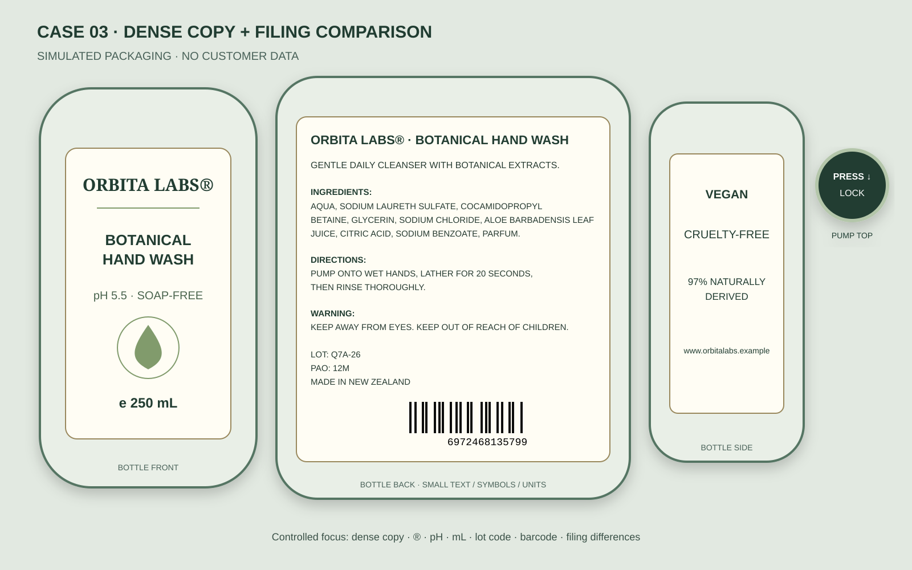
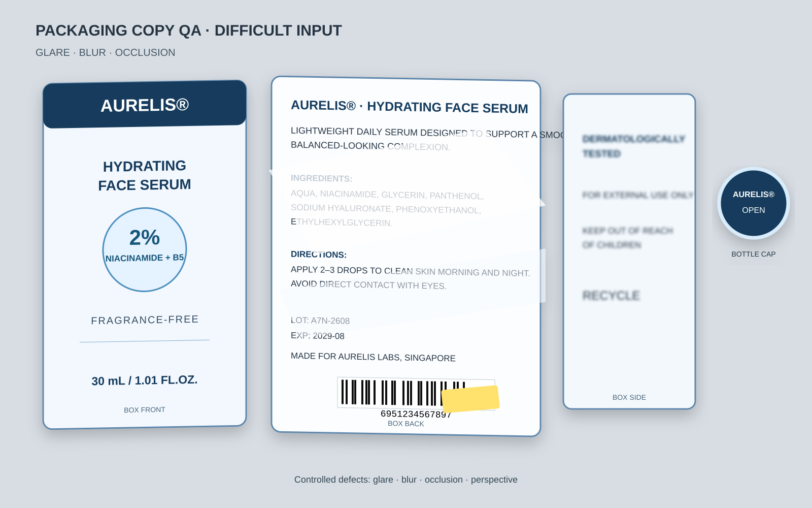

清点部件
建立正面、背面、侧面、盖子或瓶身清单，先确认资料范围。
选择一个经过验证的模拟案例。网页只播放预设过程和结果，不上传文件、不调用API，也无法访问真实Agent。

点击“开始模拟处理”，查看这个Agent如何判断、复核和决定能否交付。
等待运行……
重点不是“识别出大概意思”，而是让设计师能把结果直接复制回设计稿，并且知道每一个疑点在哪里。
建立正面、背面、侧面、盖子或瓶身清单，先确认资料范围。
按原版阅读关系逐区 OCR，保留大小写、空格、符号和换行。
重新对照原图检查易混字符、单位、条码与关键标识。
待确认项未清零就保持处理中版，全部闭环后才标记最终版。
公开页面只展示课程专用的虚构包装。真实业务案例已完成私下验收，但任何客户图片和文案都没有进入本页面。

对清晰区域继续处理，对功效描述、成分表和条码遮挡区建立待确认项，没有根据 OCR 候选补写。
完整保留品牌标志、pH、中点、连字符、容量单位、批次代码与条码，并将备案文案作为独立来源比较。
首轮测试暴露的问题被写入 Profile，再用后续案例验证规则是否稳定，而不是不断堆叠功能。
真实客户案例只用于私下测试和人工验收。公开页面、网页素材和公开截图全部来自虚构受控样例。